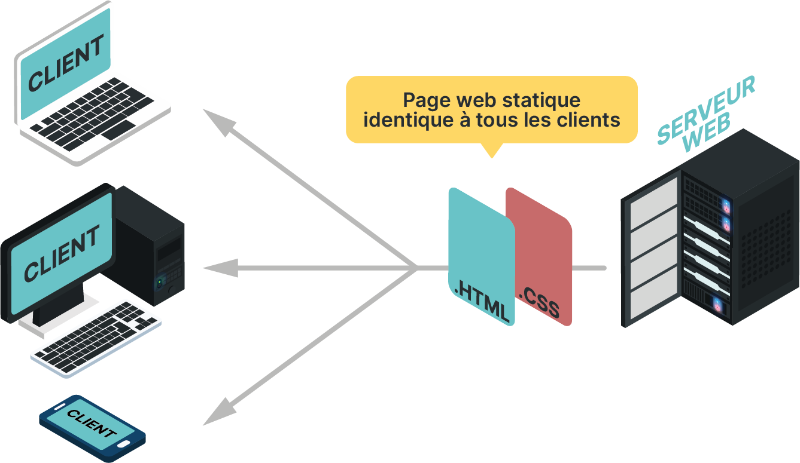
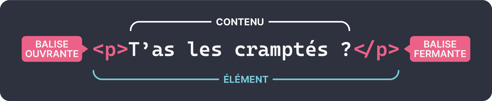

Page statique : HTML & CSS
Concentrons-nous sur le scénario le plus simple, où le serveur envoie une page statique, c'est-à-dire identique pour tous les clients et qui ne présente aucune interactivité. Une telle page ne nécessite qu'un fichier HTML et optionnellement un fichier CSS.

Les bases de l'HTML
Un langage de balisage
L'HTML n'est pas un langage de programmation, mais un langage de balisage utilisé pour structurer le contenu des pages Web.
Un fichier HTML est composé d'une série d'éléments avec lesquels vous pouvez encadrer (ou baliser) différentes parties du contenu pour les faire apparaître ou agir d'une certaine manière. Des balises encadrantes peuvent transformer une petite partie de contenu en un lien vers une autre page sur le Web, mettre des mots en italique, etc. Par exemple :
| Code HTML | Rendu |
|---|---|
T'as les cramptés ? |
T'as les cramptés ? |
T'as les <strong>cramptés</strong> ? |
T'as les cramptés ? |
Tester les exemples
Pour tester un code HTML, il existe deux manières courantes. Soit simplement copier-coller le code HTML dans un fichier ma_page.html puis l'ouvrir avec un navigateur web. Soit utiliser un site web de type « sandbox » comme Playcode.io : cette dernière méthode est plus confortable pour tester rapidement et partager facilement des bouts de code.
Anatomie d'un élément HTML

Imbrication des éléments
Les éléments peuvent être imbriqués :
<p>T'as les <strong>cramptés</strong> ?</p>
Question
Quelles sont les erreurs dans l'extrait de code HTML suivant ?
</balise1>
<balise2>
<balise1>
</balise2>
Éléments bloc vs en ligne
Les éléments de niveau bloc forment un bloc visible sur une page, tandis que les éléments en ligne ne fait pas apparaître une nouvelle ligne.
<em>Alice</em><em>Bob</em><em>Charlie</em>
<p>— T'as les cramptés ?</p><p>— Quoi ?</p><p>— Quoicoubet !</p>
Question
L'élément <p> fait partie de quelle catégorie ? De même pour <em> ?
Une première page web structurée
Voici une page web complète et minimale :
<!DOCTYPE html> <!-- (1)! -->
<html lang=fr> <!-- (2)! -->
<head> <!-- (3)! -->
<meta charset="utf-8">
<title>Je suis le titre de l'onglet</title>
</head>
<body> <!-- (4)! -->
<h1>Ma magnifique page web 🌈</h1> <!-- (5)! -->
<p> <!-- (6)! -->
Un texte très <strong>intéressant</strong>.
</p>
<a href="http://www.lyceecivray.net">Un super site !</a> <!-- (7)! -->
<!-- Un commentaire... -->
</body>
</html>
- Déclare quelle version du langage HTML utiliser.
-
- l’élément
<html>est l’élément racine du document. Tous les autres éléments du document en seront des descendants. langest ce qu'on appelle un attribut. Les éléments HTML peuvent recevoir des attributs, c'est-à-dire des informations supplémentaires.
- l’élément
<head>fournit des informations et des métadonnées sur le document HTML lui-même. Il ne représente pas le contenu visible de la page.<body>est l'élement qui contient le contenu visible de la page.<h1>représente un titre (header en anglais). Il existe différents sous-niveaux de titre par ordre décroissant d'importance :<h1>,<h2>,<h3>etc.<p>représente un paragraphe.<a>représente une ancre qui permet de définir un lien hypertexte absolu ou relatif.
Question
Répondre à l'aide de recherches sur le web :
- Quelle est la balise permettant d'insérer une image dans une page web ? Combien d'attributs obligatoires et non-obligatoires comporte-t-elle?
- Quelles sont les balises pour insérer des listes ordonnées et non-ordonnées ?
- Les tabulations sont-elles nécessaires dans le code HTML ?
- Réaliser une petite page web qui présente votre album de musique préféré (titre, pochette, description, liste des titres, un lien vers le site du groupe etc.). Exemple de page. Un autre projet serait de réaliser une page web présentant la biographie d'une personnalité.
On retient
On retient que le ficher HTML décrit de manière structuré le contenu d'une page web grâce à un système de balises.
Styliser sa page avec du CSS
Soyons honnête, le site web crée précédemment est objectivement laid. Le langage CSS (Cascading Style Sheets, feuilles de style en cascade) permet de mettre en forme, styliser, une page web comme changer la fonte de caractères ou la couleur d'un titre, centrer une image, agencer différents éléments sous la forme d'une grille etc.
On peut par exemple incorporer du CSS directement dans le fichier HTML en spécifiant l'attribut style :
<h1 style="color: red;">Ma magnifique page web 🌈</h1>
<p style="text-align: center;">
Un texte très <strong>intéressant</strong>.
</p>
Toutefois, ceci est une mauvaise pratique, il est préférable de spécifier le style d'une page web dans un fichier CSS séparé du code HTML. Ainsi plusieurs documents HTML peuvent partager le même style ! Toute modification ultérieure du style sera ainsi plus aisée.
Appliquer un style CSS
Un premier exemple
Dans un fichier nommé mon_style.css :
body
{
font-family: sans-serif; /* (1)! */
}
h1 /*(2)!*/
{
color: red;
}
-
Change la police d'écriture de l'ensemble du document HTML
<body>. -
Applique un style particulier à tous les éléments
<h1>.
Ce fichier CSS peut être ensuite appliqué au document HTML au sein de l'élément <head> :
<link rel="stylesheet" href="style.css"/>
Question
Qu'ajouter au fichier CSS pour que tous les paragraphes soient bleus ?
Anatomie d'une règle CSS

Propriétés
On peut modifier plusieurs propriétés d'un coup :
p {
color: red;
width: 500px;
border: 1px solid black;
}
Comment centrer une page ? Comment mettre la police en gras ? Comment changer la couleur d'un lien quand le curseur le survole ? Le Web et ChatGPT seront vos plus précieux alliés pour mettre en forme votre page. Et comme pour tous langages, il existe aussi de nombreux cheatsheets pour le CSS.
{kind=link}
Sélecteurs
Il existe de nombreuses manières de sélectionner des éléments spécifiques de la page pour modifier leur apparence. Grâce à des attributs :
Un élément HTML peut se voir attribuer un identifiant (id) :
<p id="rage">JE SUIS TRÈS ÉNERVÉ</p>
#rage {
font-size: 36px;
text-align: center;
color: red;
}
Un identifiant doit être spécifique à un unique élément !
De manière plus générale, plusieurs éléments HTML peuvent se voir attribuer une classe :
<p class="rome">Senatus populusque romanus</p>
.rome {
font-family: 'Courier New';
font-weight: bold;
text-transform: uppercase;
border: 3px solid black;
}
Cette méthode est très utilisée en combinaison avec les éléments HTML <div> et <span> qui agissent comme des conteneurs universels.
Question
Écrire un style CSS pour votre page web.